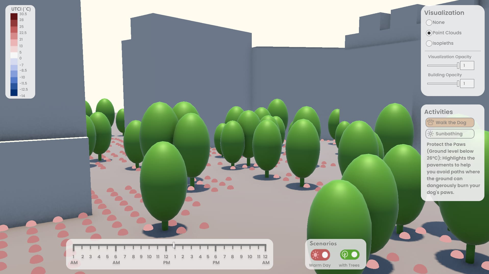
3D Visualization · Urban Climate

3D Visualization · Urban Climate
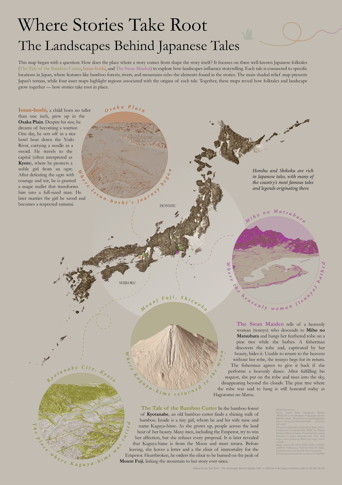
Visual Storytelling · Thematic Map
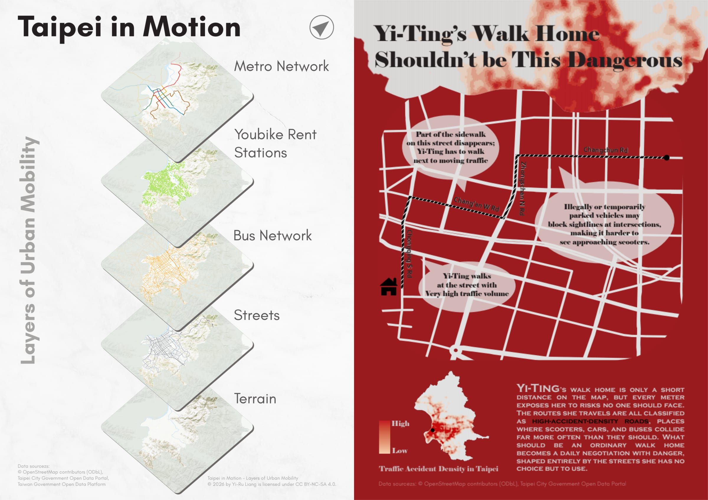
Visual Storytelling · Persuasive Map
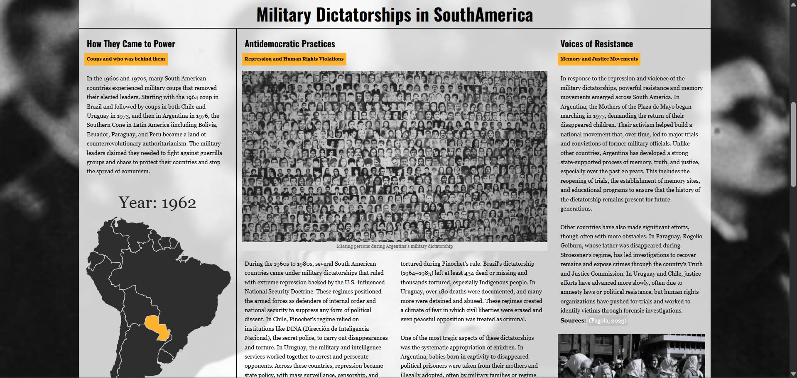
Interactive Map · Visual Storytelling
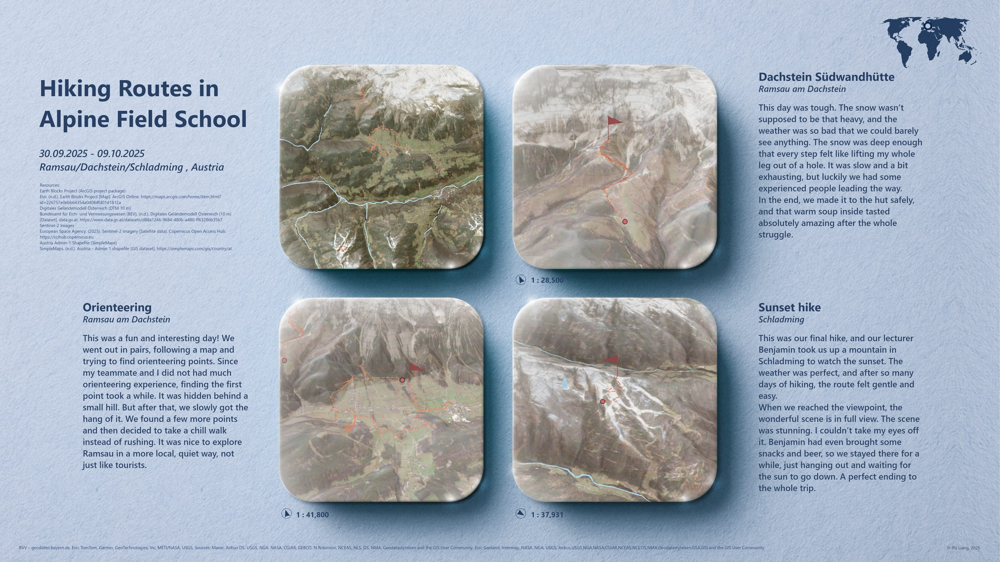
Thematic Map · Route Mapping
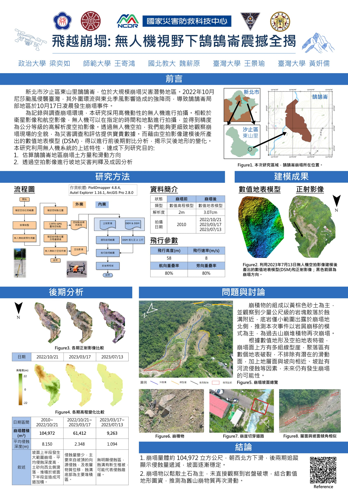
Drone Mapping · Research
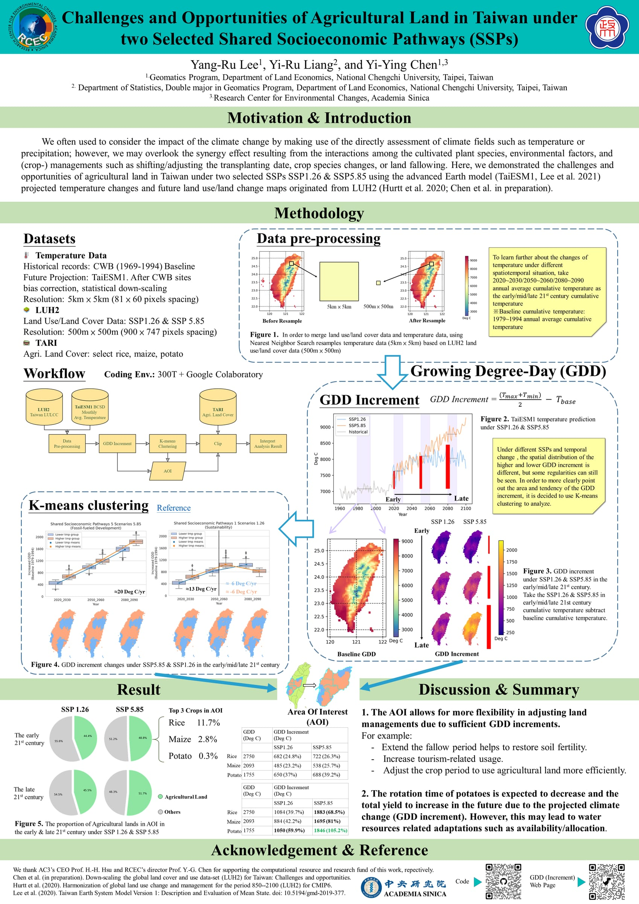
Spatial Analysis · Research
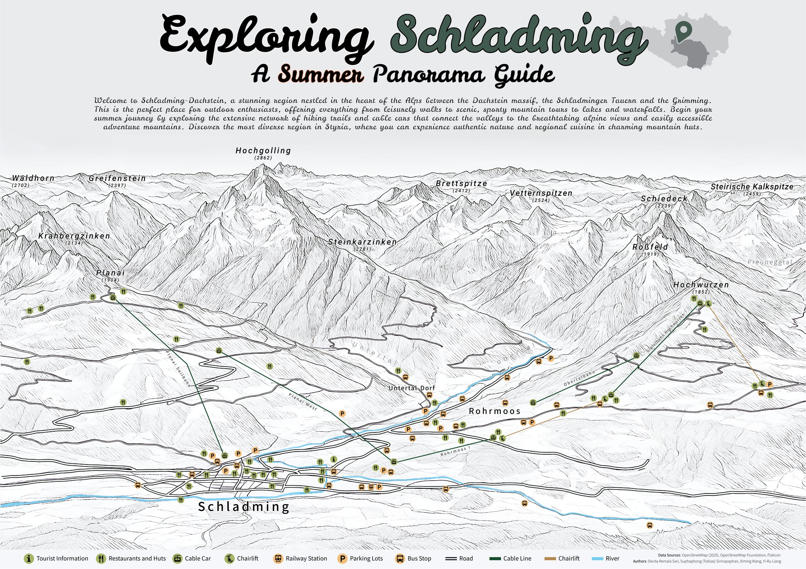
Panoramic Maps · Tourism Mapping
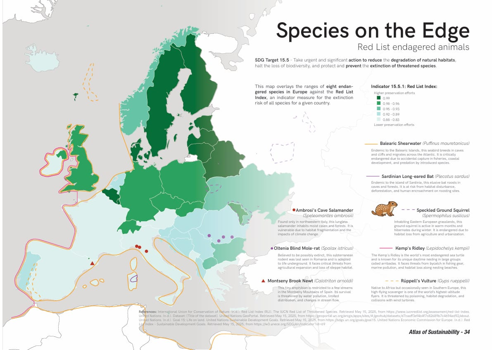
Thematic Mapping · SDGs
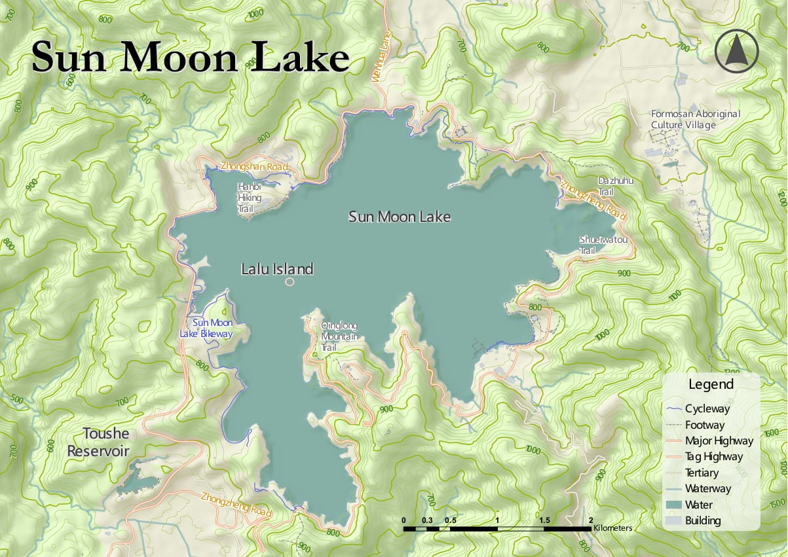
Topographic Map
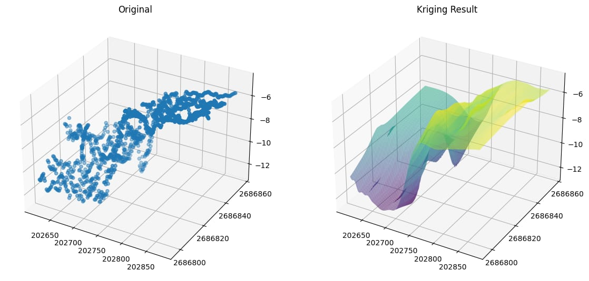
Spatial Analysis · Data Visualization